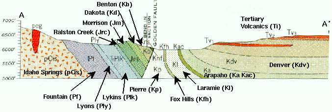

Geology near the City of Golden
The city of Golden sits just east of the Rocky Mountain Front Range. Elevation increases from about 5800' in Golden to over 7500' less than a mile west of Golden. To the east lies two prominent mesas known as North and South Table Mountains. The elevation of these features tops 6500'.
The survey area is just west of Golden's northern most suburb, lying between the Front Range and North Table Mountain. The proposed housing development would extend residential development across its main street, Washington Avenue, and across a major two-lane highway, Highway 93. The new development lies in a relatively flat portion of the valley between the Front Range and North Table Mountain that was, until recently, used for grazing.
The fault separating the Front Range to the west from the Denver Basin to the east is known as the
Golden Fault. To the west of the Golden Fault lies Precambrian gneisses, schists, and quartzites of the
Idaho Springs Formation and Paleozoic sandstones and mudstones of the Fountain, Lyons, and Lykins Formations.
To the east of the Golden Fault lies Cretaceous sandstones and shales of the Pierre, Fox Hills, Laramie,
Arapahoe, and Denver Formations.
North and South Table Mountains are capped by extrusive Tertiary
volcanics.
The volcanics are primarily composed of monzonites and latites.
Intrusive members of these flows are found north of Golden, the most prominent of which is known as
the Ralston dyke.
All mapped intrusives occur exclusively within the Pierre shale and appear to be related to late
stage movement on the Golden Fault.

Near the city of Golden, the Golden Fault strikes north-northwest. The dip of the fault
is a matter of speculation. The cross section shown above indicates a steeply dipping feature to
the west. Seismic observations, however, suggest that the dip of the fault may become more shallow as it approaches the
surface.
The Cretaceous sediments located to the east of the fault have been up-turned, and in some instances
overturned, by the thrust motion of the fault. In the region of the survey, the dip of the Cretaceous units
is essentially vertical down to depths of several hundred feet.
Within the survey area, the relevant units are all of Cretaceous age. A brief discription of each is given below.
- Denver Formation - Loosely cemented, tuffaceous sandstone, silty claystone, and andesitic conglomerate.
- Arapahoe Formation - Quartzose sandstone and claystone. Locally thick conglomerate near its base.
- Laramie Formation - Quartzose sandstone and claystone. Contains lenticular subbituminous coal beds in the lower 200 feet of the unit.
- Fox Hills - Fine-grained quartzose sandstones and shales. Contact with the Pierre shale is poorly defined.
- Pierre Shale - Shale consisting of medium-gray, clayey shale, siltstones, and some silty sandstones. Locally this unit is intruded by Tertiary volcanic dykes.
All of these units weather rather easily. Within the survey area, it is believed that up to 2 meters of sediment derived from these units overlies them. On the surface, the sediments, particularly those overlying the Pierre shale, are rich in clay minerals and hence quite dense.
Information regarding depth to water table in this area is pretty sparse. What is known, however, is that south of the survey area water table is almost 50 feet below the surface.
All of the geologic information described on this page is derived from USGS Professional Paper number 872, Geology of the Golden Quadrangle, Colorado, by R. Van Horn, 1976.